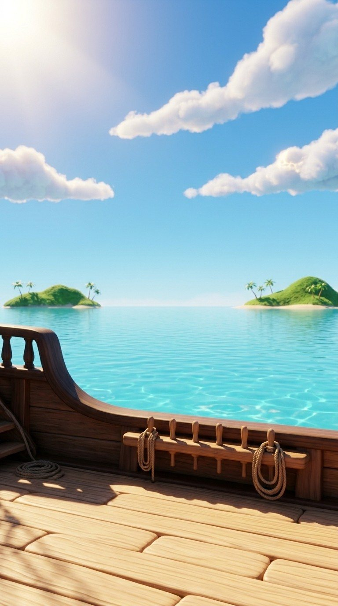
Für Eltern · 3 Zahlen


Warum Kinder jetzt lernen sollten, wie Geld funktioniert
Wischen →

der Einkäufe in Deutschland wurden 2023 noch bar bezahlt. 2021 waren es 58 %. Kinder sehen immer seltener, wie Geld den Besitzer wechselt.
Quelle: Deutsche Bundesbank, „Zahlungsverhalten in Deutschland 2023“
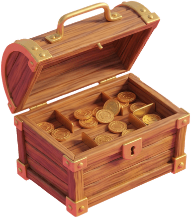
der 14- bis 24-Jährigen sagen, sie hätten in der Schule wenig oder so gut wie nichts über Wirtschaft und Finanzen gelernt.
Quelle: Bankenverband, Jugendstudie 2024
Erwachsene in Deutschland sind überschuldet. Besonders gefährdet: junge Menschen unter 30, wegen Konsum, Krediten und Onlinekäufen.
Quelle: Creditreform, SchuldnerAtlas 2025
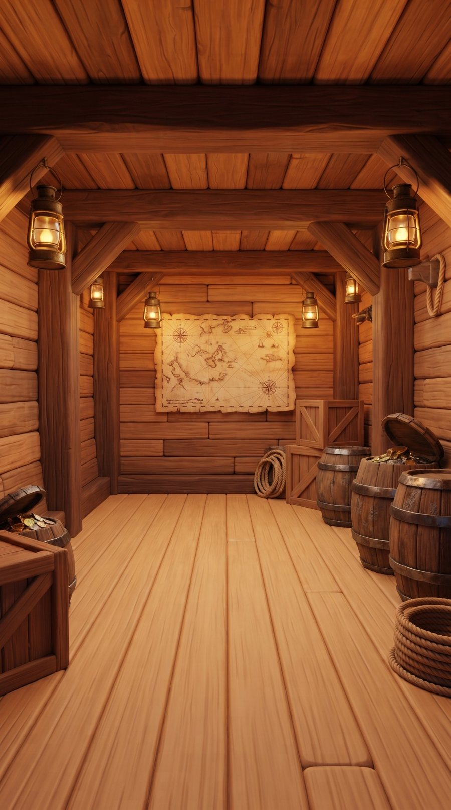
Gleicher Tag, gleicher Betrag. Nur so kann dein Kind planen, sparen und sich auf etwas freuen.
Auch wenn der Kauf unsinnig scheint: Aus kleinen Fehlkäufen lernt man mehr als aus jedem Vortrag.

Taschengeld ist Übungsgeld, keine Belohnung fürs Bravsein. Sonst lernt dein Kind etwas anderes als den Umgang mit Geld.

Kurze Abstände sind für Jüngere leichter zu überblicken. Wer gut plant, schafft später auch einen ganzen Monat.
Frag ab und zu: „Wofür hast du es ausgegeben? Würdest du es wieder kaufen?“ Ohne Vorwurf, mit Neugier.
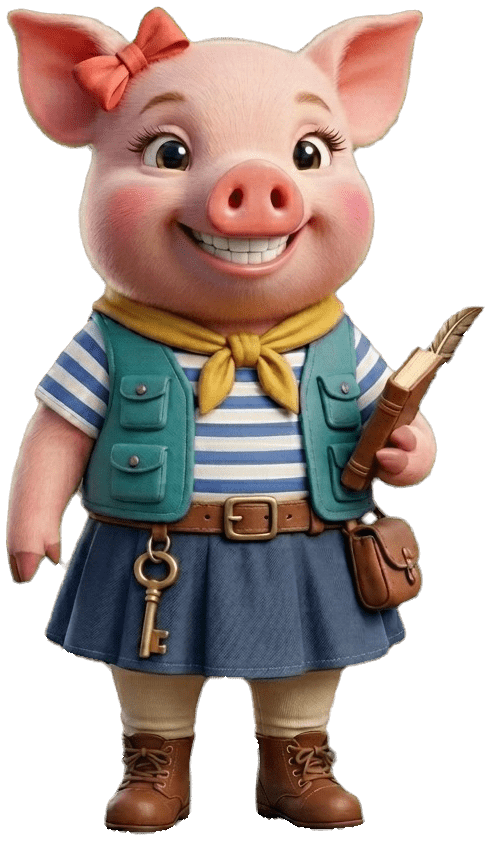
Ein Familienspiel für den Supermarkt. Dauert 5 Minuten, wirkt viel länger.
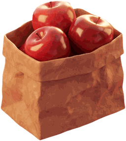

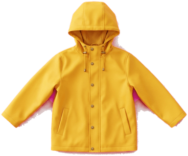
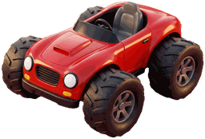
Vor dem Einkauf bekommt dein Kind eine Aufgabe: Es darf 3 Dinge aus dem Einkaufswagen „prüfen“.
Für jedes Ding: Brauchen wir das, oder wollen wir das?
Es geht nicht ums Verzichten. Die Frage ist nur: jetzt, später oder gar nicht? Wünsche dürfen warten. Oft sind sie am nächsten Tag kleiner.
Rechnet gemeinsam: Wie viel hätten wir gespart, wenn nur das Gebrauchte im Wagen gelegen hätte?
In Taleria üben Kinder genau das auf der Wunschinsel: mit Elsa, der Elster, und ihren Wunsch-Flaschen.
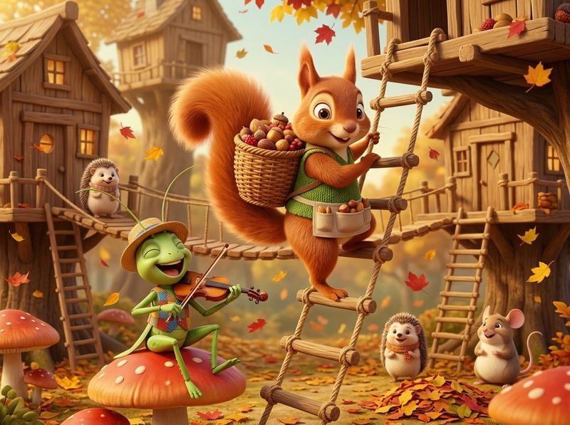
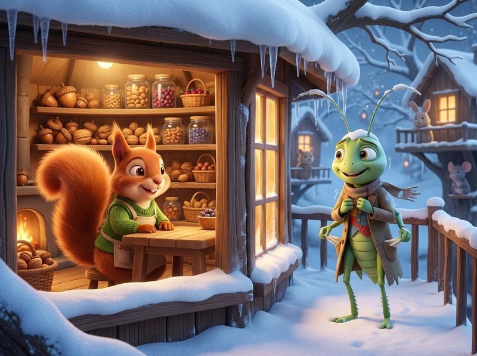
Im Herbst legt Emma einen Teil ihrer Nüsse zurück. Gustav, die Grille, isst alles sofort. Dann kommt der Winter: Emma hat Vorrat. Gustav hat nichts.
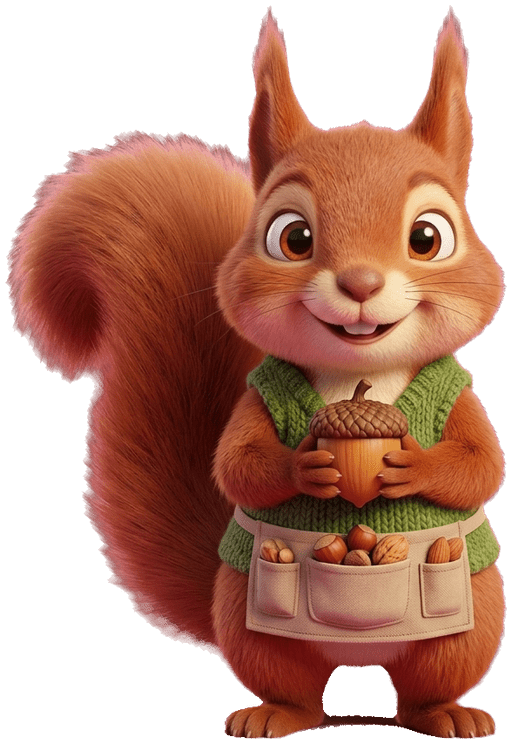
Für einen großen Wunsch
Rollschuhe, die mehr kosten als eine Woche Taschengeld
Für einen Notfall
Der Fahrradreifen hat ein Loch, die Brille ist kaputt
Für etwas Geplantes
Omas Geburtstag in drei Monaten, die Klassenfahrt
Auf der Spar-Insel in Taleria legen Kinder ihren ersten Wunschschatz an und sehen, wie kleine Beträge groß werden.

Talo, der Kapitän, und Tala, die Zahlmeisterin. Mit ihnen segelt dein Kind von Insel zu Insel und lernt, wie Geld funktioniert.
Schreib’s in die Kommentare:
Alter + Betrag + wöchentlich oder monatlich
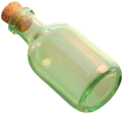
Neue Wünsche kommen erst in die Flasche. Kleine warten 1 Tag, große 1 Woche.
Will dein Kind es danach noch? Dann wird daraus ein Sparziel. Wenn nicht: Geld gespart, ganz ohne Streit.
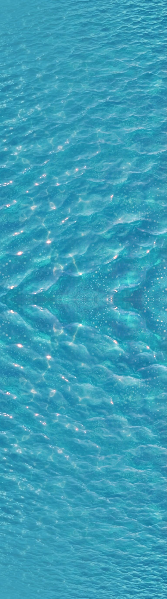
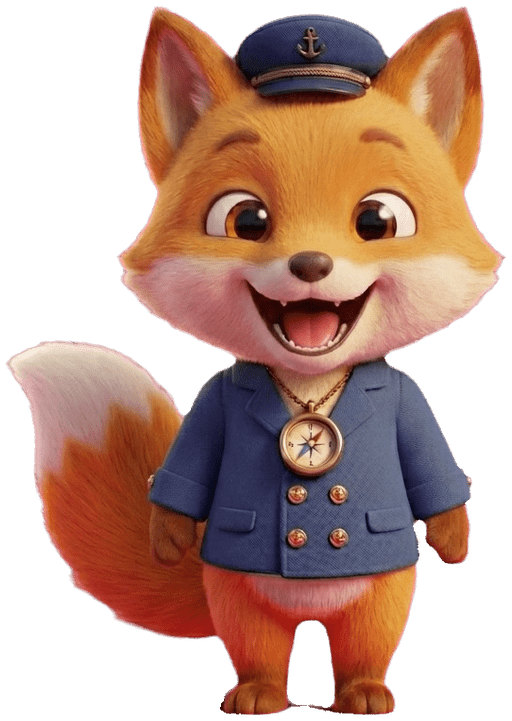
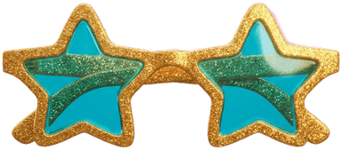
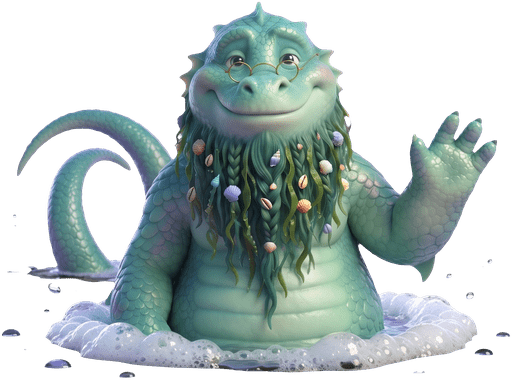
12 Fragen aus 4 Inseln. Wer 9 schafft, bekommt sein goldenes Siegel.